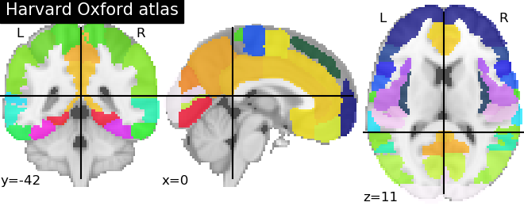

8.2.1. Basic Atlas plotting¶
Plot the regions of a reference atlas (here the Harvard-Oxford atlas).
Out:
Atlas ROIs are located at: /home/kamalakar/nilearn_data/fsl/data/atlases/HarvardOxford/HarvardOxford-cort-maxprob-thr25-2mm.nii.gz
from nilearn import datasets
from nilearn import plotting
dataset = datasets.fetch_atlas_harvard_oxford('cort-maxprob-thr25-2mm')
atlas_filename = dataset.maps
print('Atlas ROIs are located at: %s' % atlas_filename)
plotting.plot_roi(atlas_filename, title="Harvard Oxford atlas")
plotting.show()
Total running time of the script: ( 0 minutes 0.618 seconds)